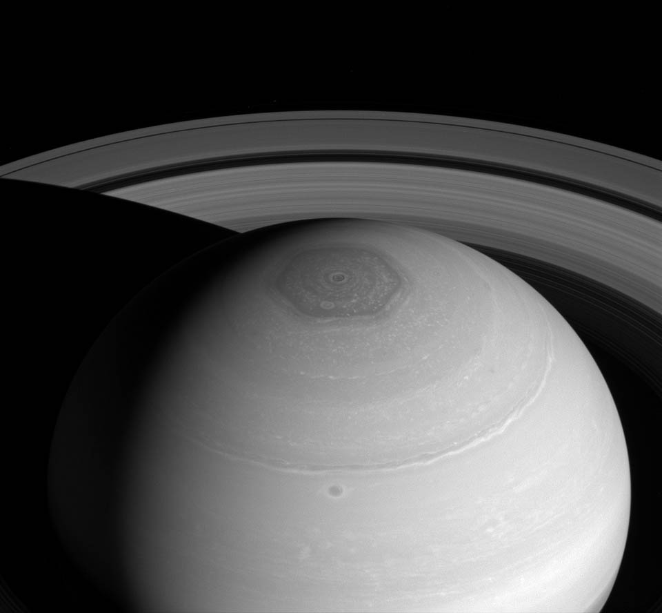

Saturn
Saturn is the sixth planet from the Sun and the second largest planet in the Solar System, after Jupiter. Named after the Roman god of agriculture, its astronomical symbol (♄) represents the god's sickle. Saturn is a gas giant with an average radius about nine times that of Earth.[10][11] While only one-eighth the average density of Earth, with its larger volume Saturn is just over 95 times more massive.

Composite image roughly comparing the sizes of Saturn and Earth.
A global storm girdles the planet in 2011. The head of the storm (bright area) passes the tail circling around the left limb.

Saturn - North polar hexagon and vortex as well as rings (April 2, 2014).